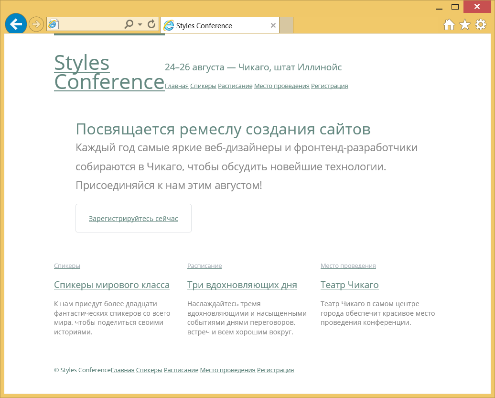
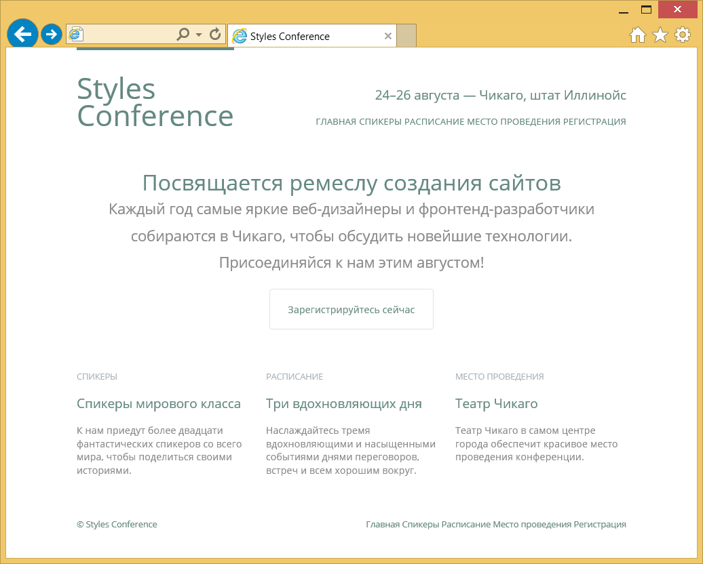
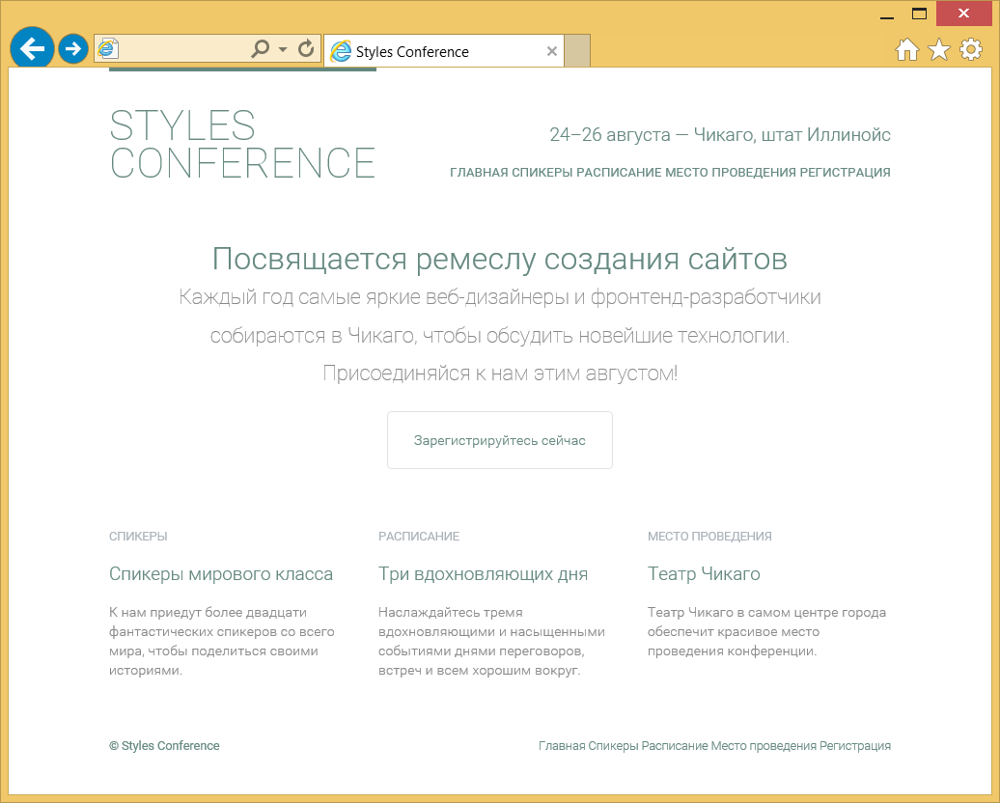

Работа с типографикой
Область веб-типографики значительно расширилась за последнее время. Существует несколько разных причин роста популярности, одной из широко признанной причиной является разработка системы для встраивания собственных веб-шрифтов на сайт.
В прошлом мы были ограничены небольшим количеством шрифтов, которые могли использовать на сайте. Эти шрифты наиболее типовые установленные шрифты на компьютерах, так что они, скорее всего, правильно отображались на экране. Если шрифта на компьютере не было, то он и не отображался на сайте. Теперь, когда у нас есть возможность встраивать шрифты, у нас имеется гораздо большая палитра шрифтов на выбор, включая те, которые мы добавляем на сайт.
Возможность встраивания шрифтов даёт нам доступ к бесчисленным новым шрифтам, но при этом также важно знать основные принципы типографики. В этом уроке мы собираемся взглянуть на некоторые из этих основных принципов и как их применять для наших веб-страниц с помощью HTML и CSS.
Гарнитура и шрифт
Термины «гарнитура» и «шрифт» часто взаимозаменяемы, что приводит к путанице. Вот что означает каждый термин.
Гарнитура это то, что мы видим. Это художественное впечатление от того, как текст выглядит, воспринимается и читается.
Шрифт представляет собой файл, содержащий гарнитуру. Использование шрифта позволяет компьютеру получить доступ к гарнитуре.
Один из способов помочь прояснить разницу между гарнитурой и шрифтом — это сравнить их с песней и MP3. Гарнитура очень похожа на песню, в том что это произведение искусства. Она создана художником или художниками и открыта для публичного обсуждения. Шрифт, с другой стороны, очень похож на МР3 тем, что он сам не оказывает художественного впечатления, это только способ передачи художественной ценности.
Добавление цвета к тексту
Обычно первыми шагами, которые мы будем делать при создании сайта, являются выбор основной гарнитуры и цвета текста для использования. Хотя есть ряд разных свойств, которые могут быть изменены — размер, насыщенность и так далее, но гарнитура и цвет текста, как правило, оказывают наибольшее влияние на внешний вид и читаемость страницы. Избавьтесь от настроек браузера по умолчанию, примените собственную гарнитуру и цвет текста, что немедленно задаст тон нашей странице.
Единственное свойство, которое нам требуется для установки цвета текста — это свойство color. Оно принимает одно значение цвета, но в разных форматах. Эти форматы, как мы обсуждали в уроке 3, «Знакомство с CSS», включают ключевые слова, шестнадцатеричные значения и значения RGB, RGBa, HSL и HSLa. Шестнадцатеричные значения являются наиболее распространёнными, поскольку они обеспечивают максимальный контроль с минимальными усилиями.
Давайте взглянем на CSS, необходимый для изменения цвета всего текста в пределах элемента <html> на странице:
html {
color: #555;
}Изменение свойств шрифта
CSS предлагает много разных свойств для редактирования внешнего вида текста на странице. Эти свойства входят в две категории: свойства шрифта и свойства текста. Большинство из этих свойств начинаются с font- или text-. Для начала мы обсудим основные свойства шрифта.
font-family
Свойство font-family применяется, чтобы объявить, какой шрифт, а также какие резервные или заменяющие шрифты должны быть использованы для отображения текста. Значение font-family содержит несколько имён шрифтов, перечисляемых через запятую.
Первый указанный шрифт, начиная слева, является основным выбранным шрифта. Если первый шрифт недоступен, после него указываются альтернативные шрифты в порядке предпочтения слева направо.
Имена шрифтов, состоящие из двух или более слов должны быть взяты в кавычки. Кроме того, последний шрифт должен быть ключевым словом, который обозначает системный шрифт по умолчанию для указанного типа, наиболее популярные это sans-serif и serif.
Свойство font-family в действии выглядит так:
body {
font-family: "Helvetica Neue", Helvetica, Arial, sans-serif;
}В данном случае Helvetica Neue является предпочтительным шрифтом для отображения. Если этот шрифт недоступен или не установлен на указанном устройстве, будет использоваться следующий шрифт в списке — Helvetica и так далее.
font-size
Свойство font-size даёт возможность установить размер текста, используя типовые значения размера, включая пиксели, em, проценты, пункты или ключевые слова.
Здесь в CSS устанавливается размер шрифта 14 пикселей для элемента <body>:
body {
font-size: 14px;
}font-style
Чтобы сделать текст курсивным или предотвратить его от этого, мы будем использовать свойство font-style. Это свойство принимает четыре ключевых слова: normal, italic, oblique и inherit. Из них наиболее часто используются italic (задаёт текст курсивным) и normal (возвращает текст к своему обычному стилю).
Ниже CSS устанавливает для всех элементов с классом special свойство font-style как italic:
.special {
font-style: italic;
}font-variant
Это происходит не часто, но иногда текст необходимо установить небольшими заглавными буквами, также известными как капитель. Для такого особого случая мы воспользуемся свойством font-variant. Оно принимает три значения: normal, small-caps и inherit. Наиболее типовыми значениями являются normal и small-caps, которые используются для переключения шрифтов между капителью и обычным текстом.
Для переключения всех элементов с классом firm, мы будем использовать font-variant со значением small-caps:
.firm {
font-variant: small-caps;
}font-weight
Иногда мы хотим сделать текст жирным или изменить насыщенность гарнитуры. В таких случаях мы будем использовать свойство font-weight. Оно принимает в качестве значения ключевое слово или число.
Ключевое слово включает normal, bold, bolder, lighter и inherit. Из этих ключевых слов рекомендуется в первую очередь задействовать normal и bold, чтобы изменить текст от обычного до жирного и наоборот. Вместо использования ключевых слов bolder или lighter лучше применять числовое значение для более точного управления.
На практике, вот CSS для установки font-weight как bold для любого элемента с классом daring:
.daring {
font-weight: bold;
}Числовые значения 100, 200, 300, 400, 500, 600, 700, 800 и 900 связаны с гарнитурами шрифтов, которые имеют несколько жирностей. Их порядок начинается с самой тонкой жирности, 100, и повышается до самой толстой жирности, 900. Для справки, значение normal соответствует 400, а значение bold соответствует 700. Таким образом, любое числовое значение ниже 400 будет достаточно тонким, а любое значение выше 700 будет достаточно жирным.
Изменение насыщенности шрифта до 600 для любого элемента с классом daring теперь отображает текст как полужирный — не совсем жирный, как ключевое слово bold до этого:
.daring {
font-weight: 600;
}Насыщенность шрифта
Перед применением числового значения мы должны проверить и посмотреть, пойдёт ли используемый шрифт с указанной насыщенностью. Попытка использовать число, которое не доступно для данного шрифта, приведёт эти стили к ближайшему значению.
Например, шрифт Times New Roman содержит две насыщенности: нормальная или 400 и жирная или 700. Попытка использовать 900 установит шрифт в ближайшую насыщенность, 700 в данном случае.
line-height
Межстрочный интервал — расстояние между двумя строками текста — объявляется с помощью свойства line-height. Оно принимает все основные значения размера, которые мы рассмотрели в уроке 3, «Знакомство с CSS».
Лучше всего для читаемости задать межстрочный интервал примерно в полтора раза больше значения свойства font-size. Это можно быстро получить путём установки line-height как 150% или просто 1.5. Однако если мы работаем с базовой сеткой, предпочтительнее использовать пиксели и получить немного больше контроля над line-height.
Взгляните на CSS, мы установили line-height как 22 пикселя для элемента <body>, тем самым задав 22 пикселя между каждой строкой текста:
body {
line-height: 22px;
}Межстрочный интервал также может быть использован для вертикального выравнивания по центру одной строки текста внутри элемента. Используя одинаковые значения свойств line-height и height вы выровняете текст по центру вертикали:
.btn {
height: 22px;
line-height: 22px;
}Этот метод может быть полезен для кнопок, предупреждающих сообщений и других однострочных текстовых блоков.
Универсальное свойство font
Все перечисленные выше шрифтовые свойства могут быть объединены в одном универсальном свойстве font. Это свойство может принимать несколько значений шрифтовых свойств. Порядок значений этих свойств должен быть следующим, слева направо: font-style, font-variant, font-weight, font-size, line-height и font-family.
Эти значения перечисляются слева направо без применения запятых (кроме названий шрифтов, поскольку свойство font-family задействует запятые). Косая черта (/) необходима для разделения значений свойств font-size и line-height.
Каждое значение свойства не является обязательным, за исключением значений font-size и font-family. Иными словами, мы можем включить только значения свойств font-size и font-family при желании.
html {
font: italic small-caps bold 14px/22px "Helvetica Neue", Helvetica, Arial, sans-serif;
}Свойства шрифта все разом
Давайте взглянем на пример, который использует все эти свойства шрифта совместно. В следующем HTML и CSS демонстрируются разные возможности для стилизации текста.
HTML
<h2><a href="#">Я разработчик</a></h2>
<p class="byline">Опубликовано: Шэй Хоу</p>
<p>Каждый день я вижу дизайнеров и программистов работающих совместно друг с другом.
Они работают разумно, преследуя бизнес-цели. Они работают старательно, делая
исключительные продукты. Они решают реальные проблемы и гордятся своей работой.
Они разработчики. <a href="#">Продолжить…</a></p>CSS
h2,
p {
color: #555;
font: 13px/20px "Helvetica Neue", Helvetica, Arial, sans-serif;
}
a {
color: #0087cc;
}
a:hover {
color: #ff7b29;
}
h2 {
font-size: 22px;
font-weight: bold;
margin-bottom: 6px;
}
.byline {
color: #9799a7;
font-family: Georgia, Times, "Times New Roman", serif;
font-style: italic;
margin-bottom: 18px;
}Демонстрация свойств шрифта
Псевдоклассы в CSS
Данная демонстрация использует псевдокласс :hover, который мы никогда не видели прежде. Для справки, псевдоклассы — это ключевые слова, которые могут быть добавлены в конце селектора для стилизации элемента, когда он находится в уникальном состоянии.
Псевдокласс :hover задаёт стиль элемента, когда пользователь проводит курсор мыши над этим элементом. При использовании с элементом <a>, как показано выше, все элементы <a> получают уникальные стили, когда на них наводят курсор. Теперь наши элементы <a> изменят цвет в этот момент.
На практике
Вернёмся назад к нашему сайту Styles Conference и начнём добавлять некоторые свойства шрифта.
Мы начнём с обновления шрифта для всего нашего текста. Чтобы сделать это, мы применим стили к элементу <body>. Начнём с color, а также добавим значения font-weight, font-size, line-height и font-family через свойство font.
В попытке сохранить наш файл main.css организованным, насколько это возможно, создадим новый раздел для этих пользовательских стилей, поместив его чуть ниже нашего сброса и выше стилей сетки.
Нам нужно добавить следующее:
/* ======================================== Пользовательские стили ======================================== */ body { color: #888; font: 300 16px/22px "Open Sans", "Helvetica Neue", Helvetica, Arial, sans-serif; }В уроке 4, «Открываем блочную модель», мы начали добавлять некоторые типографские стили, в частности, нижний margin для некоторых заголовков разного уровня и абзацев. В этом же разделе файла main.css давайте добавим цвет к заголовкам от первого до четвёртого уровней.
h1, h2, h3, h4 { color: #648880; }Пока мы здесь, добавим также размер шрифта для этих заголовков. Наши элементы <h1> и <h2> будут использовать достаточно большие значения font-size, следовательно, мы также хотим увеличить у них значения line-height, чтобы сохранить текст внутри этих элементов разборчивым. Для справки, мы установим значение line-height как 44 пикселя, удвоив значение основного line-height, установленного в правилах для элемента <body>.
h1 { font-size: 36px; line-height: 44px; } h2 { font-size: 24px; line-height: 44px; } h3 { font-size: 21px; } h4 { font-size: 18px; }Наши элементы <h5> планируются чуть более уникальными, чем остальные заголовки. Соответственно, мы собираемся немного изменить их стили.
Мы применим другое значение свойства color и немного уменьшим font-size для этих элементов, а также собираемся изменить font-weight на 400 или normal.
По умолчанию, браузеры отображают заголовки с font-weight как bold. Для наших заголовков, однако, в данный момент все font-weight заданы как 300. Сброс CSS в верхней части файла main.css изменил font-weight на normal, а затем font-weight внутри элемента <body> задал значение 300 для всех заголовков.
Значение font-weight как 400 для элемента <h5> на самом деле сделает это немного толще, чем остальные заголовки и текст.
h5 { color: #a9b2b9; font-size: 14px; font-weight: 400; }Наш сброс в начале стилей также сбросит стили браузера по умолчанию для элементов <strong>, <cite> и <em>, которые мы хотим добавить обратно. Для элементов <strong> мы хотим установить font-weight как 400, который на самом деле приравнивается к normal, а не bold, поскольку используемая нами гарнитура толще, чем большинство других гарнитур. Затем для элементов <cite> и <em> мы хотим установить font-style как italic.
strong { font-weight: 400; } cite, em { font-style: italic; }У нас всё получается, так что давайте продолжать, добавляя некоторые стили для наших ссылок. В данный момент они синие, так указал браузер по умолчанию. Сделаем их того же цвета, что наши заголовки от <h1> до <h4>. Кроме того, применим псевдокласс :hover, чтобы изменить цвет на светло-серый, когда пользователь наводит курсор на ссылку.
/* ======================================== Ссылки ======================================== */ a:hover { color: #a9b2b9; } a { color: #648880; }Теперь взглянем на наш элемент <header> и обновим для него наши стили. Мы начнём обновление с логотипа, добавив свойства font-size и line-height в наборе правил для logo. После добавления к существующим свойствам border-top, float и padding, новый набор правил должен выглядеть так:
.logo { border-top: 4px solid #648880; float: left; font-size: 48px; line-height: 44px; padding: 40px 0 22px 0; }Поскольку мы совсем немного увеличили ширину логотипа, добавим margin к элементу <h3> внутри <header>, чтобы сбалансировать это. Мы сделаем это путём размещения значения tagline у атрибута class для элемента <h3>, а затем используя этот класс в нашем CSS, чтобы применить соответствующие поля.
Не забывайте, что изменения в элементе <h3> должны произойти на каждой странице.
HTML
<h3 class="tagline">24–26 августа — Чикаго, штат Иллинойс</h3>CSS
.tagline { margin: 66px 0 22px 0; }После элемента <h3> с классом tagline наступает очередь элемента <nav>. Добавим значение primary-nav к атрибуту class элемента <nav>, а также свойства font-size и font-weight, чтобы навигация выделялась по сравнению с остальной частью заголовка.
HTML
<nav class="primary-nav"> ... </nav>CSS
.primary-nav { font-size: 14px; font-weight: 400; }Теперь элемент <header> в несколько лучшей форме, давайте также взглянем на наш элемент <footer>. Используя класс primary-footer изменим color и font-size для всего текста внутри <footer>. Кроме того, поднимем font-weight для <small> до 400.
Учитывая существующие стили, стиль для нашего подвала должен выглядеть так:
.primary-footer { color: #648880; font-size: 14px; padding-bottom: 44px; padding-top: 44px; } .primary-footer small { float: left; font-weight: 400; }Также обновим немного нашу главную страницу. Начнём с раздела hero и увеличим общий line-height в разделе до 44 пикселей. Мы также сделаем текст в этом разделе больше, увеличив font-size для элемента <h2> до 36 пикселей и font-size для элемента <p> до 24 пикселей.
Мы можем внести все эти изменения, используя существующий класс hero и создав новые селекторы для элементов <h2> и <p>. Наши стили для раздела hero переделаются теперь таким образом:
.hero { line-height: 44px; padding: 22px 80px 66px 80px; } .hero h2 { font-size: 36px; } .hero p { font-size: 24px; }В завершении, у нас есть небольшая проблемка, которую надо исправить на главной странице. Ранее мы задали для всех ссылок светло-серый цвет при наведении на них. Это прекрасно работает, за исключением трёх тизеров на главной странице, где ссылка охватывает оба элемента <h3> и <h5>. Поскольку у этих элементов есть своё собственное определение color, псевдокласс :hover, описанный ранее, не оказывает на них влияние.
К счастью, мы можем это исправить, хотя для этого потребуется достаточно сложный селектор. Начнём с добавления класса teaser ко всем трём колонкам на главной странице. Мы будем использовать этот класс в качестве отборочного селектора в ближайшее время.
<section class="grid"> <!-- Спикеры --> <section class="teaser col-1-3"> <a href="speakers.html"> <h5>Спикеры</h5> <h3>Спикеры мирового класса</h3> </a> <p>К нам приедут более двадцати фантастических спикеров со всего мира, чтобы поделиться своими историями.</p> </section> ... </section>С классом teaser мы готовы несколько утяжелить CSS и создать достаточно сложный селектор. Начнём наш селектор с этого класса, поскольку мы хотим только нацелиться на элементы внутри элемента с классом teaser. Отсюда мы хотим применить стили к элементам, которые находятся внутри ссылок и на которые навели курсор мыши. Таким образом, мы добавим селектор типа совместно с псевдоклассом :hover. Наконец, мы добавим селектор типа h3, чтобы выбрать действительные элементы <h3>, к которым мы хотели бы применить стили.
В общей сложности, наш селектор и стили для этих элементов <h3> будут выглядеть следующим образом:
.teaser a:hover h3 { color: #a9b2b9; }
Уфф, это было немного. Хорошая новость — наша страница Styles Conference начинает выглядеть действительно приятно и показывает немного индивидуальности.

Рис. 6.01. Наш сайт Styles Conference получил немного любви от горстки шрифтовых свойств
Применение текстовых свойств
Знать, как установить семейство, размер, стиль, начертание, насыщенность и межстрочный интервал это только полдела. Дополнительно мы можем решить, как выровнять, украсить, трансформировать текст, добавить красную строку и межбуквенное расстояние в текст. Начнём с выравнивания текста.
text-align
Выравнивание текста является важной частью построения ритма и потока на странице. Мы делаем это с помощью свойства text-align. У этого свойства пять значений: left, right, center, justify и inherit. Все эти значения довольно просты; как и ожидалось, они выравнивают текст по левому краю, правому краю, по центру или по ширине.
Ниже CSS устанавливает текст всех абзацев выровненный по центру:
p {
text-align: center;
}Свойство text-align, однако, не следует путать со свойством float. Значения text-align как left или right выравнивают текст внутри элемента влево или вправо, в то время как значения float как left или right двигают весь элемент. Иногда свойство text-align даст нам желаемый результат, в другой раз нам, возможно, потребуется использовать свойство float.
text-decoration
Свойство text-decoration предлагает несколько способов для украшения текста. Оно принимает в качестве значений ключевые слова none, underline, overline, line-through и inherit. Использование text-decoration варьируется, но самое популярное применение — это подчёркивание ссылок, что является стилем браузера по умолчанию.
Здесь стиль для любого элемента с классом note задаёт text-decoration как underline:
.note {
text-decoration: underline;
}К одному элементу можно применить несколько значений text-decoration, указывая значения ключевых слов через пробел.
text-indent
Свойство text-indent может быть использовано для создания красной строки внутри элемента, как это обычно наблюдается в печатных изданиях. Для этого свойства доступны все основные значения размера, в том числе пиксели, пункты, проценты и так далее. Положительные значения делают отступ текста внутрь, в то время как отрицательные значения делают отступ наружу.
Здесь CSS меняет отступ текста для всех элементов <p> внутрь на 20 пикселей:
p {
text-indent: 20px;
}text-shadow
Свойство text-shadow позволяет нам добавить тень или несколько теней к тексту. Свойство обычно принимает четыре значения, все они перечисляются друг за другом слева направо. Первые три значения — это размер, а последнее значение — цвет.
В трёх значениях размера первое значение определяет горизонтальное смещение тени, второе значение определяет вертикальное смещение тени, а третье определяет радиус размытия тени. Четвертое и последнее значение — это цвет тени, который может быть любым значением применяемым в свойстве color.
Здесь для всего текста элемента <p> свойство text-shadow задаёт на 30% прозрачную чёрную тень, сдвинутую на 3 пикселя вправо, на 6 пикселей вниз и с размытием 2 пикселя:
p {
text-shadow: 3px 6px 2px rgba(0, 0, 0, .3);
}Использование отрицательных значений размера для горизонтальных и вертикальных смещений позволяет перемещать тени влево и вверх.
Несколько теней также могут быть соединены вместе с помощью разделённых запятыми значений, добавляя больше, чем одна тень для текста. Применение ряда теней позволяет разместить их выше и ниже текста или в любой желаемой вариации.
box-shadow
Свойство text-shadow устанавливает тень конкретно для текста элемента. Если бы нам хотелось разместить тень для элемента в целом, то мы можем использовать свойство box-shadow.
Свойство box-shadow работает так же, как text-shadow, принимая значения для горизонтальных и вертикальных смещений, размытие и цвет.
box-shadow также принимает необязательное четвёртое значение размера, перед значением цвета, для растяжения тени. Положительное значение растяжения расширит тень больше, чем размер элемента, к которому применяется свойство, а отрицательное значение сократит тень меньше, чем размер самого элемента.
Наконец, свойство box-shadow может включать впереди необязательное значение inset для размещения тени внутри элемента, а не снаружи.
text-transform
Подобно свойству font-variant есть свойство text-transform. В то время как свойство font-variant ищет альтернативный вариант гарнитуры, свойство text-transform изменит строку текста без необходимости альтернативной гарнитуры. Свойство text-transform принимает пять значений: none, capitalize, uppercase, lowercase и inherit.
Значение capitalize делает заглавной первую букву каждого слова, значение uppercase устанавливает заглавной каждую букву, а значение lowercase делает каждую букву строчной. С помощью none любые из этих унаследованных значений вернутся к исходному стилю текста.
Ниже CSS устанавливает текст для всех элементов <р> заглавными буквами:
p {
text-transform: uppercase;
}letter-spacing
Используя свойство letter-spacing мы можем регулировать (или отслеживать) расстояние между букв на странице. Положительное значение будет толкать буквы дальше друг от друга, а отрицательное значение будет тянуть буквы ближе друг к другу. Значение none вернёт пространство между букв к своей обычной величине.
Использование относительного размера со свойством letter-spacing гарантирует, что мы поддерживаем правильное расстояние между буквами, когда меняется font-size для текста. Это, однако, всегда хорошая идея, чтобы перепроверить нашу работу.
Здесь с помощью CSS все буквы в пределах наших элементов <p> на .5 em станут ближе друг к другу:
p {
letter-spacing: -.5em;
}word-spacing
Также, подобно свойству letter-spacing мы можем отрегулировать расстояние между словами в элементе, используя свойство word-spacing. Это свойство принимает те же значения размера и ключевые слова, что и letter-spacing. Вместо расстояния между букв, свойство word-spacing применяет эти значения между словами.
Здесь каждое слово в элементе <p> будет на расстоянии .25 друг от друга.
p {
word-spacing: .25em;
}Свойства текста все разом
Давайте вернёмся к нашей демонстрации тизера блога, на этот раз добавив несколько текстовых свойств перед свойствами шрифта.
HTML
<h2><a href="#">Я разработчик</a></h2>
<p class="byline">Опубликовано: Шэй Хоу</p>
<p class="intro">Каждый день я вижу дизайнеров и программистов работающих совместно друг с другом.
Они работают разумно, преследуя бизнес-цели. Они работают старательно, делая исключительные продукты.
Они решают реальные проблемы и гордятся своей работой. Они разработчики. <a href="#">Продолжить…</a></p>CSS
h2,
p {
color: #555;
font: 13px/20px "Helvetica Neue", Helvetica, Arial, sans-serif;
}
a {
color: #0087cc;
}
a:hover {
color: #ff7b29;
}
h2 {
font-size: 22px;
font-weight: bold;
letter-spacing: -.02em;
margin-bottom: 6px;
}
h2 a {
text-decoration: none;
text-shadow: 2px 2px 1px rgba(0, 0, 0, .2);
}
.byline {
color: #9799a7;
font-family: Georgia, Times, "Times New Roman", serif;
font-style: italic;
margin-bottom: 18px;
}
.intro {
text-indent: 15px;
}
.intro a {
font-size: 11px;
font-weight: bold;
text-decoration: underline;
text-transform: uppercase;
}Демонстрация свойств текста
На практике
С текстовыми свойствами подмышкой, перепрыгнем обратно к нашему сайту Styles Conference и включим их в работу.
В настоящий момент каждая ссылка на странице подчёркивается, что является стилем по умолчанию для ссылок. Этот стиль является временами несколько преобладающим, с другой стороны, мы собираемся его немного поменять.
Начнём добавление к разделу с нашими ссылкам в файле main.css с удаления подчёркивания для всех ссылок через свойство text-decoration. Далее выберем все ссылки, которые появляются в абзацах, и зададим им нижнюю границу.
Мы могли бы использовать свойство text-decoration вместо border-bottom для подчёркивания ссылок внутри каждого абзаца, однако с помощью свойства border-bottom мы получим больше контроля над внешним видом подчёркивания. Здесь, например, подчёркивание будет другого цвета, чем сам текст.
Наш раздел со ссылками, который включает в себя предыдущие стили при наведении, теперь должен выглядеть следующим образом:
a { color: #648880; text-decoration: none; } a:hover { color: #a9b2b9; } p a { border-bottom: 1px solid #dfe2e5; }Возвращаясь к нашим элементам <h5>, у которых стиль немного отличается от остальных заголовков, установим их все в верхнем регистре с помощью свойства text-transform. Наши новые стили элементов <h5> должны выглядеть следующим образом:
h5 { color: #a9b2b9; font-size: 14px; font-weight: 400; text-transform: uppercase; }Вернёмся к нашему элементу <header> и применим дополнительные стили к нашему навигационному меню (к которому мы ранее добавили класс primary-nav). После существующих свойств font-size и font-weight добавим letter-spacing и изменим наш текст на заглавный с помощью свойства text-transform.
Наши стили для элемента <nav> с классом primary-nav теперь должны выглядеть следующим образом:
.primary-nav { font-size: 14px; font-weight: 400; letter-spacing: .5px; text-transform: uppercase; }Ранее для логотипа мы задали float как left внутри элемента <header>. Теперь наш слоган находится непосредственно справа от логотипа, однако, мы хотели бы, чтобы он был виден в правой части элемента <header>.
Нам нужно добавить свойство text-align со значением right для элемента <h3> с классом tagline, чтобы получить слоган, который располагается с правой стороны.
При добавлении к существующему свойству margin наши новые стили для элемента <h3> с классом tagline будут выглядеть следующим образом:
.tagline { margin: 66px 0 22px 0; text-align: right; }Нам также хотелось бы, чтобы наши навигационные меню в элементах <header> и <footer> располагались по правому краю. Поскольку оба элемента <header> и <footer> содержат дочерние обтекаемые элементы, мы можем использовать тот же подход, что проделали с нашим слоганом.
Обтекаемые элементы внутри <header> и <footer> убираются из обычного потока страницы, и это заставляет другие элементы обтекать вокруг них. В данном конкретном случае наши навигационные меню это элементы, которые обтекают вокруг обтекаемых элементов.
Поскольку мы применяем одни и те же стили сразу к двум навигационным меню, то дадим каждому класс nav. Наш элемент <header> будет выглядеть так:
<header class="container group"> <h1 class="logo">...</h1> <h3 class="tagline">...</h3> <nav class="nav primary-nav"> ... </nav> </header>А элемент <footer> будет выглядеть так:
<footer class="primary-footer container group"> <small>...</small> <nav class="nav"> ... </nav> </footer>Не забывайте, что изменения в наших элементах <header> и <footer> должны быть сделаны на каждой странице.
С классом nav для двух навигационных меню создадим новый раздел в рамках нашего файла main.css, чтобы добавить общие стили навигации. Начнём с добавления свойства text-align со значением right к классу nav. Мы расширим эти стили позже, но это пока послужит хорошей основой.
/* ======================================== Навигация ======================================== */ .nav { text-align: right; }Мы уже добавили свойство text-align к нескольким разным элементам, давайте также добавим text-align со значением center к набору правил с классом hero. Для справки, эти стили, в том числе содержащие свойства line-height и padding, находятся в разделе главной страницы нашего файла main.css.
.hero { line-height: 44px; padding: 22px 80px 66px 80px; text-align: center; }
У Styles Conference теперь серьёзный стиль (плохая шутка, извините). Если серьёзно, то все наши стили вместе сочетаются очень хорошо и сайт прогрессирует.

Рис. 6.02. Наш сайт Styles Conference продвигается довольно хорошо после добавления нескольких текстовых свойств
Использование безопасных веб-шрифтов
По умолчанию, есть несколько шрифтов которые заранее установлены на каждом компьютере, планшете, смартфоне или другом устройстве с браузером. Поскольку они установлены на каждом устройстве, мы можем свободно использовать эти шрифты на наших сайтах, зная, что независимо от того, какое устройство просматривает наш сайт, шрифт будет отображаться правильно. Эти шрифты известны как «безопасные веб-шрифты». Таких шрифтов только горстка и наиболее надёжные перечислены здесь:
- Arial
- Courier New, Courier
- Garamond
- Georgia
- Lucida Sans, Lucida Grande, Lucida
- Palatino Linotype
- Tahoma
- Times New Roman, Times
- Trebuchet
- Verdana
Встраивание веб-шрифтов
У нас также есть возможность загружать шрифты с сервера и включать их на сайт через стилевое правило @font-face. Эта возможность делает чудеса для сетевой типографики. Сейчас, более чем когда-либо, типографика приходит в жизнь в Интернете.
Встраивание собственных веб-шрифтов выглядит как приведённый CSS. Сперва мы используем правило @font-face, чтобы определить имя нашего шрифта через свойство font-family, а также исходник нашего шрифта (путь к файлу, содержащему наш выбранный шрифт) через свойство src. Отсюда мы можем использовать этот шрифт, включая его имя в качестве значения свойства font-family.
@font-face {
font-family: "Lobster";
src: local("Lobster"), url("lobster.woff") format("woff");
}
body {
font-family: "Lobster", "Comic Sans", cursive;
}Демонстрация свойств текста
Возможность встраивать любые шрифты на сайте не означает, что мы имеем юридическое право сделать это. Гарнитуры являются формой искусства и размещение их на нашем сервере может позволить другим легко украсть их. Полномочия применять гарнитуру зависят от лицензирования, на которые у нас есть права.
К счастью, важность использования новых шрифтов на сайте была признана и компании начали разработку способов лицензирования и включают новые шрифты на сайтах. Некоторые из таких компаний, вроде Typekit и Fontdeck, работают по модели подписки для лицензирования шрифтов, в то время как другие, вроде Google Fonts, лицензируют шрифты бесплатно. Перед загрузкой каких-либо шрифтов удостоверьтесь, что у вас есть на это разрешение.
На практике
Чтобы добавить немного характера к нашему сайту Styles Conference, попробуем использовать на нём Google Font.
Зайдём на сайт Google Fonts и поищем шрифт, который мы хотели бы использовать: Roboto. После того как нашли, добавим его к нашей коллекции, следуя инструкциям на сайте.
Когда придёт время выбора, какое начертание мы хотели бы использовать, удостоверимся, что указали 300 и 400, как мы уже применяли в нашем CSS. Также добавим 100 к коллекции для другого варианта тоже.
Google выдаст нам дополнительный элемент <link> для включения в <head> на всех наших страницах. Мы поместим этот новый элемент <link> непосредственно ниже нашего существующего <link>. Новый элемент будет включать в себя правильный указатель на стили Google, который в том числе включает новый файл CSS с правильным правилом @font-face, необходимым для использования шрифта Roboto.
После добавления нового элемента <link>, наш элемент <head> будет выглядеть следующим образом:
<head> <meta charset="utf-8"> <title>Styles Conference</title> <link rel="stylesheet" href="assets/stylesheets/main.css"> <link rel="stylesheet" href="https://fonts.googleapis.com/css?family=Roboto:400,300,100&subset=cyrillic,latin"> </head>После того, как мы добавили новый элемент <link> для всех наших страниц мы готовы начать использовать шрифт Roboto. Мы сделаем это, добавив его в наш основной набор шрифтов в свойстве font внутри стиля для элемента <body>.
Добавим Roboto в начале нашего набора шрифтов так: "Roboto", "Open Sans", "Helvetica Neue", Helvetica, Arial, sans-serif.
Хотя Roboto это одно слово, но поскольку это встроенный веб-шрифт, то мы хотим взять его в кавычки внутри любого CSS. Наш новый стиль для элемента <body> будет выглядеть следующим образом:
body { color: #888; font: 300 16px/22px "Roboto", "Open Sans", "Helvetica Neue", Helvetica, Arial, sans-serif; }Теперь Roboto должен загрузиться и работать, что видно по всему тексту на сайте Styles Conference. Поближе взглянем на наш логотип и обновим его немного.
Внутри набора правил с классом logo начнём с добавления свойства font-weight со значением 100, чтобы сделать текст достаточно тонким. Также используем свойство text-transform со значением uppercase, чтобы сделать все буквы заглавными и свойство letter-spacing со значением .5 пикселей, чтобы добавить немного пространства между букв внутри логотипа.
Все стили для нашего логотипа будут выглядеть следующим образом:
.logo { border-top: 4px solid #648880; float: left; font-size: 48px; font-weight: 100; letter-spacing: .5px; line-height: 44px; padding: 40px 0 22px 0; text-transform: uppercase; }Поскольку нам доступно значение 100 у свойства font-weight, давайте также установим абзац для раздела hero такой же насыщенности. Мы можем использовать существующий селектор чтобы сделать это и новый набор правил будет выглядеть следующим образом:
.hero p { font-size: 24px; font-weight: 100; }
Наш сайт Styles Conference проделал несколько довольно больших шагов в этом уроке и внешний вид сайта начинает по-настоящему блистать.

Рис. 6.03. Главная страница Styles Conference после добавления веб-шрифта от Google
Демонстрация и исходный код
Ниже вы можете посмотреть сайт Styles Conference в его нынешнем состоянии, а также скачать исходный код сайта на данный момент.
Просмотр сайта Styles Conference или Скачать исходный код
Добавление цитат
Тексты на сайтах иногда включает различные цитаты. Все варианты цитирования могут быть охвачены семантически в HTML с помощью элементов <cite>, <q> и <blockquote>. Из-за того, что цитаты, как правило, отличается от обычного текста по своему виду, мы обсудим их здесь, в уроке по типографике.
Понять, когда и какой элемент использовать для разметки цитаты правильно, отнимает немного практики. В общем, соблюдайте следующие правила:
- <cite>: применяется для указания на творческую работу, автора или ресурс;
- <q>: применяется для коротких, встроенных цитат;
- <blockquote>: применяется для наиболее длинных внешних цитат.
Цитата на творческую работу
Строчный элемент <cite> используется в HTML в качестве указателя на творческую работу; элемент должен включать в себя название работы, имя автора, или ссылку ведущую на работу. По умолчанию, содержимое внутри элемента <cite> отображается в браузере курсивом.
Для получения дополнительной справки поможет добавление гиперссылки на первоисточник цитаты, когда это целесообразно.
Вот цитата из книги Уолтера Айзексона про Стива Джобса внутри элемента <cite>. В цитате также есть гиперссылка на книгу.
<p>Книга <cite><a href="http://www.amazon.com/Steve-Jobs-Walter-Isaacson/dp/1451648537">Стив Джобс</a></cite> действительно вдохновляет.</p>Демонстрация цитаты на творческую работу
Строчные цитаты
Довольно часто текст от автора выступает как строчная цитата в другом тексте. Для этой цели должен применяться элемент <q>. Он семантически указывает цитату на авторский текст и не должен использоваться для каких-либо других целей.
По умолчанию браузер вставит соответствующие кавычки и даже изменит их вид, основываясь на языке, указанном в глобальном атрибуте lang.
Вот пример:
<p>Стив Джобс однажды сказал: <q>Один хоум-ран гораздо лучше, чем два дабла</q>.</p>Элемент <q> включает необязательный атрибут cite. Он действует в качестве указателя на ссылку в виде URL. Этот атрибут не меняет внешний вид элемента, он просто добавляет значение для экранных читалок и других устройств. Поскольку атрибут не доступен для просмотра в браузере, также полезно предложить гиперссылку на этот источник, рядом с актуальной цитатой.
Вот пример:
<p><a href="http://www.businessweek.com/magazine/content/06_06/b3970001.htm">Стив Джобс</a> однажды сказал:
<q cite="http://www.businessweek.com/magazine/content/06_06/b3970001.htm">Один хоум-ран гораздо лучше, чем два дабла</q>.</p>Демонстрация строчной цитаты
Внешние цитаты
Цитируя большой блок текста, который заимствован из внешнего источника и занимает несколько строк, мы будем использовать элемент <blockquote>. Данный элемент является блочным и может содержать другие вложенные в него блочные элементы, в том числе заголовки и абзацы.
Вот пример, который использует элемент <blockquote>:
<blockquote>
<p>В понимании большинства людей дизайн — это внешний лоск. Это украшение интерьера.
Это ткань штор, ткань дивана. Но для меня, всё это далеко от смысла дизайна.
Дизайн — это основа души человеческого творчества, что в конечном итоге выражает
себя в последующих внешних слоях продукта.</p>
</blockquote>Более длинные цитаты в элементе <blockquote> могут включать в себя прямую речь. Подобные цитаты могут содержать как атрибут cite, так и элемент <cite>.
Атрибут cite может добавляться к элементу <blockquote> тем же путём, что был использован для элемента <q> ранее, чтобы указать на цитату в виде URL. Элемент <cite> может быть добавлен после самой цитаты для указания оригинального источника цитаты, если это необходимо.
Здесь в HTML излагается расширенная цитат из Стива Джобса, которая первоначально появилась в журнале Fortune. Цитата размечена с помощью элемента <blockquote> с атрибутом cite, который показывает, где цитата появилась первоначально. В элементе <blockquote> есть элемент <cite> наряду с элементом <a>, он обеспечивает дополнительное цитирование и ссылку на цитату, которая видна пользователям.
<blockquote cite="http://money.cnn.com/magazines/fortune/fortune_archive/2000/01/24/272277/index.htm">
<p>«В понимании большинства людей дизайн — это внешний лоск. Это украшение интерьера.
Это ткань штор, ткань дивана. Но для меня, всё это далеко от смысла дизайна.
Дизайн — это основа души человеческого творчества, что в конечном итоге выражает
себя в последующих внешних слоях продукта.»</p>
<p><cite>Стив Джобс в <a href="http://money.cnn.com/ magazines/fortune/fortune_archive/2000/01/24/272277/index.htm">
журнале Fortune</a></cite></p>
</blockquote>Демонстрация внешней цитаты
Резюме
Учиться стилизовать текст увлекательно, так как наш контент начинает передавать некоторые эмоции. Мы также можем начать играть с иерархией нашего содержимого, что делает наш сайт более разборчивыми и удобным.
Напомним быстро, что мы обсудили в этом уроке:
- добавление цвета к нашему тексту для его улучшения;
- применение шрифтовых свойств, в том числе font-family, font-size, font-style, font-weight и др.;
- применение текстовых свойств, включая text-align, text-decoration, text-indent, text-shadow и др.;
- история безопасных веб-шрифтов и как внедрить наши собственные веб-шрифты;
- как правильно разметить цитаты.
Концентрирование на тексте и небольшое баловство с типографикой продвинуло наш дизайн довольно далеко вперёд. Дальше мы внесём в наш сайт чуть больше цвета с помощью фона и градиентов.
Ресурсы и ссылки
- The Elements of Typographic Style Applied to the Web via Richard Rutter
- CSS Font Shorthand Property Cheat Sheet via Impressive Webs
- Google Fonts
См. также

Все материалы сайта доступны по лицензии Creative Commons «Attribution-NonCommercial» («Атрибуция — Некоммерческое использование») 4.0 Всемирная, если не указано иное.